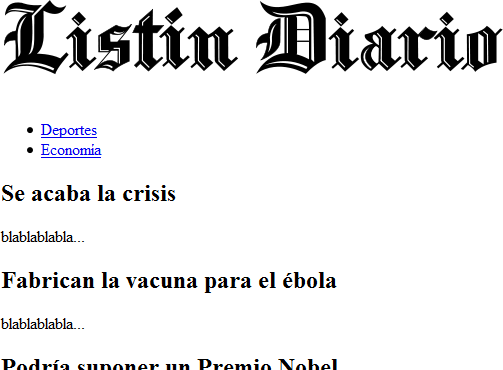
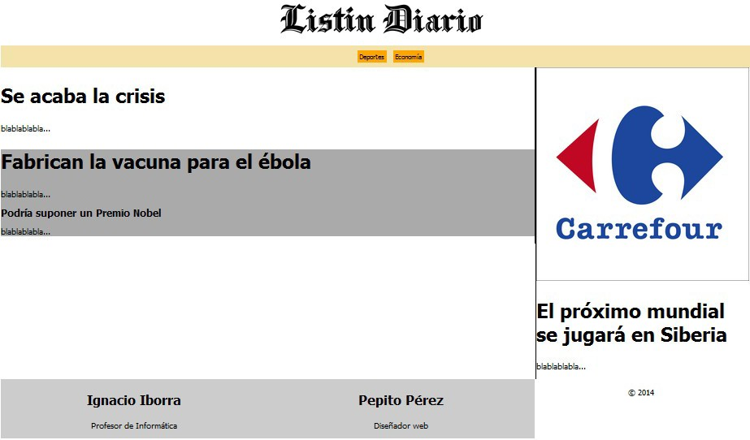
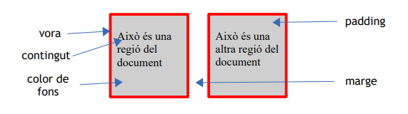
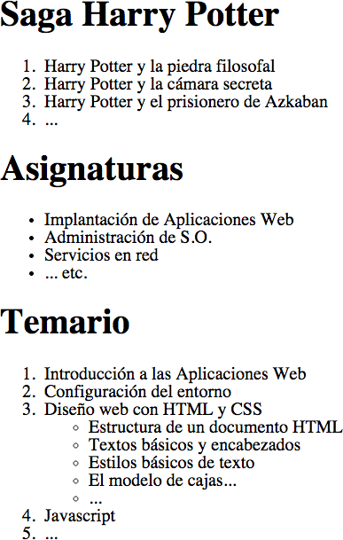
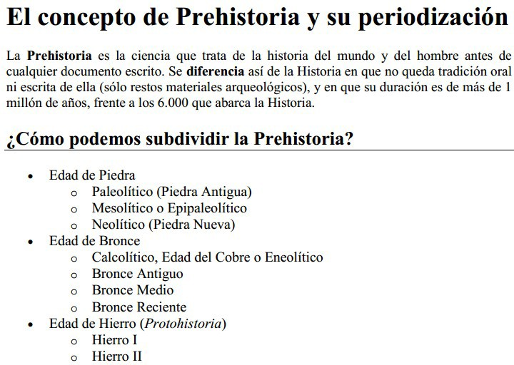
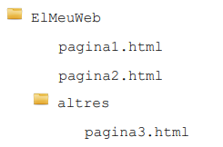
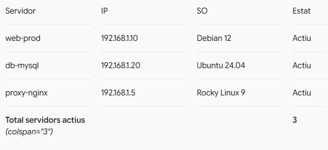
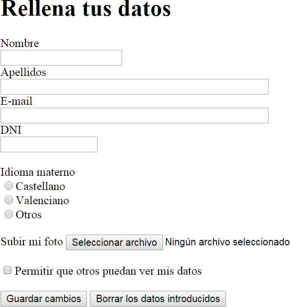
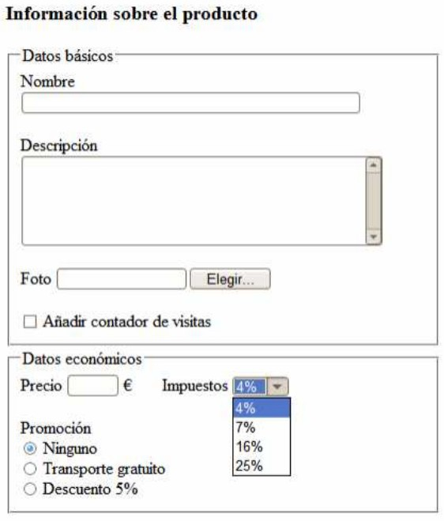

Posicionament CSS, estructures de contingut (llistes, taules, multimèdia) i captura segura de dades amb formularis Posicionamiento CSS, estructuras de contenido (listas, tablas, multimedia) y captura segura de datos con formularios
Implantació d'Aplicacions Web (IAW) — 2n ASIR · Bloc 2: Disseny Web Implantación de Aplicaciones Web (IAW) — 2º ASIR · Bloque 2: Diseño Web
Els documents HTML sense CSS presenten un flux vertical rígid. Els elements <div> i les etiquetes semàntiques d'HTML5 (header, nav, main, section, article, aside, footer) permeten agrupar continguts en blocs i aplicar-los regles d'estil i dimensions pròpies.
Los documentos HTML sin CSS presentan un flujo vertical rígido. Los elementos <div> y las etiquetas semánticas de HTML5 (header, nav, main, section, article, aside, footer) permiten agrupar contenidos en bloques y aplicarles reglas de estilo y dimensiones propias.

Elements en bloc apilats per defecte un davall de l'altre.Elementos en bloque apilados por defecto uno debajo del otro.

Contenidors estilitzats, colors, amplàries i espaiats controlats.Contenedores estilizados, colores, anchuras y espaciados controlados.
Permeten fixar l'amplària i alçària en píxels (px), percentatge (%) o unitats de finestra (vw, vh). Propietats protectores com min-width o max-width: 100% eviten desbordaments en mòbils.
Permiten fijar la anchura y altura en píxeles (px), porcentaje (%) o unidades de ventana (vw, vh). Propiedades protectoras como min-width o max-width: 100% evitan desbordamientos en móviles.
margin separa la caixa d'altres elements veïns (admet auto per a centrar horitzontalment). padding és l'espai interior de seguretat entre el contingut i la vora.
margin separa la caja de otros elementos vecinos (admite auto para centrar horizontalmente). padding es el espacio interior de seguridad entre el contenido y el borde.
Podem configurar cadascun dels quatre costats de forma independent: border-top, border-right, border-bottom i border-left, definint gruix, estil (solid, dashed) i color.
Podemos configurar cada uno de los cuatro lados de forma independiente: border-top, border-right, border-bottom y border-left, definiendo grosor, estilo (solid, dashed) y color.
Crea 01_caixesCSS.html aplicant a un paràgraf els següents estils: marge superior de 30px, marges esquerre i dret del 20%, fons groc, farciment interior (padding) de 10px, vora superior roja de 4px sòlida, vora dreta blava de 6px sòlida, vora inferior verda de 2px sòlida i vora esquerra sense vora (none).
Crea 01_caixesCSS.html aplicando a un párrafo los siguientes estilos: margen superior de 30px, márgenes izquierdo y derecho del 20%, fondo amarillo, relleno interior (padding) de 10px, borde superior rojo de 4px sólido, borde derecho azul de 6px sólido, borde inferior verde de 2px sólido y borde izquierdo sin borde (none).

La propietat position determina com es col·loca un element en el document i com reacciona a les coordenades top, right, bottom, left i z-index.
La propiedad position determina cómo se coloca un elemento en el documento y cómo reacciona a las coordenadas top, right, bottom, left y z-index.
| Valor de position | Comportament de flux i referènciaComportamiento de flujo y referencia | Cas d'ús habitualCaso de uso habitual |
|---|---|---|
static |
Valor per defecte. Segueix el flux normal del document. Ignora top, left, right, bottom i z-index.Valor por defecto. Sigue el flujo normal del documento. Ignora top, left, right, bottom y z-index. |
Textos i blocs estàndard.Textos y bloques estándar. |
relative |
Es desplaça respecte a la seua posició original sense deixar buit en el flux (els altres elements no ocupen el seu lloc). Crea un context de posició per als fills absoluts.Se desplaza respecto a su posición original sin dejar hueco en el flujo (los otros elementos no ocupan su lugar). Crea un contexto de posición para los hijos absolutos. | Contenidors pares d'insígnies o elements superposats.Contenedores padres de insignias o elementos superpuestos. |
absolute |
S'extrau completament del flux. Es posiciona respecte al seu ancestre posicionat més proper (que tinga relative, absolute o fixed). Si no en té cap, es posiciona respecte a l'arrel <html>.Se extrae completamente del flujo. Se posiciona respecto a su ancestro posicionado más cercano (que tenga relative, absolute o fixed). Si no tiene ninguno, se posiciona respecto a la raíz <html>. |
Badges a la cantonada d'una targeta, botons flotants interns.Badges en la esquina de una tarjeta, botones flotantes internos. |
fixed |
Extret del flux. Es posiciona de forma fixa respecte al viewport del navegador. No es mou mai encara que l'usuari faça scroll a la pàgina.Extraído del flujo. Se posiciona de forma fija respecto al viewport del navegador. No se mueve nunca aunque el usuario haga scroll en la página. | Barres de navegació superiors (navbar sticky), botons de WhatsApp/xat flotant.Barras de navegación superiores (navbar sticky), botones de WhatsApp/chat flotante. |
sticky |
Híbrid entre relative i fixed: es comporta com a flux normal fins que l'scroll assoleix el punt definit (ex. top: 0;), moment en què es queda clavat.Híbrido entre relative y fixed: se comporta como flujo normal hasta que el scroll alcanza el punto definido (ej. top: 0;), momento en que se queda fijado. |
Capçaleres de taules o menús d'índex que s'acompanyen durant la lectura.Cabeceras de tablas o menús de índice que acompañan durante la lectura. |
Un error típic de l'alumnat és declarar position: absolute; top: 10px; right: 10px; i sorprendre's que la caixa se'n vaja a l'extrem superior dret de tota la finestra.
Un error típico del alumnado es declarar position: absolute; top: 10px; right: 10px; y sorprenderse de que la caja se vaya al extremo superior derecho de toda la ventana.
Perquè un fill absolut quede contingut dins de la seua caixa mare, el pare ha de tindre obligatòriament position: relative;.
Para que un hijo absoluto quede contenido dentro de su caja madre, el padre debe tener obligatoriamente position: relative;.
Crea 02_caixes.html definint tres caixes amb diferents colors de fons i proporcions: Caixa 1 (50% d'ample, 100px d'altura), Caixa 2 (20% d'ample, 60px d'altura) i Caixa 3 (30% d'ample, 80px d'altura), integrades en un contenidor pare amb flexbox per a comprovar el seu flux i adaptabilitat en redimensionar la finestra.
Crea 02_caixes.html definiendo tres cajas con diferentes colores de fondo y proporciones: Caja 1 (50% de ancho, 100px de altura), Caja 2 (20% de ancho, 60px de altura) y Caja 3 (30% de ancho, 80px de altura), integradas en un contenedor padre con flexbox para comprobar su flujo y adaptabilidad al redimensionar la ventana.
Per a passos o ítems on l'ordre té significat:Para pasos o ítems donde el orden tiene significado:
Per a col·leccions sense jerarquia temporal (punts):Para colecciones sin jerarquía temporal (viñetas):
Per a glossaris i fitxes de dades clau-valor:Para glosarios y fichas de datos clave-valor:
Crea 03_llistes.html amb tres seccions: una llista ordenada <ol> per a pel·lícules, una desordenada <ul> per a assignatures del cicle i una llista ordenada per al temari.
Crea 03_llistes.html con tres secciones: una lista ordenada <ol> para películas, una desordenada <ul> para asignaturas del ciclo y una lista ordenada para el temario.

Crea 04_prehistoriador.html reproduint la periodització de la Prehistòria amb llistes de múltiples nivells fent servir estils disc en el primer nivell i circle en els subnivells niats.
Crea 04_prehistoriador.html reproduciendo la periodización de la Prehistoria con listas de múltiples niveles empleando estilos disc en el primer nivel y circle en los subniveles anidados.

L'etiqueta <a href="..."> és la pedra angular de la web. Cal dominar tres tipus d'enllaços:
La etiqueta <a href="..."> es la piedra angular de la web. Es imprescindible dominar tres tipos de enlaces:
Incloent protocol i domini (https://...). S'obrin sovint en nova pestanya amb target="_blank" i rel="noopener noreferrer" per seguretat.
Incluyen protocolo y dominio (https://...). Se suelen abrir en nueva pestaña con target="_blank" y rel="noopener noreferrer" por seguridad.
Naveguen per l'arbre local: ./fitxer.html (mateixa carpeta), ../ (pujar un nivell), sub/fitxer.html (baixar a subcarpeta).
Navegan por el árbol local: ./archivo.html (misma carpeta), ../ (subir un nivel), sub/archivo.html (bajar a subcarpeta).

Permeten botar instantàniament a qualsevol secció de la mateixa pàgina associant l'href="#nomId" a un element amb id="nomId".
Permiten saltar instantáneamente a cualquier sección de la misma página asociando el href="#nombreId" a un elemento con id="nombreId".
Crea 05_instituts.html amb una llista d'instituts de secundària de la província enllaçant a les seues webs oficials mitjançant rutes absolutes i obertura en nova pestanya (target="_blank").
Crea 05_instituts.html con una lista de institutos de secundaria de la provincia enlazando a sus webs oficiales mediante rutas absolutas y apertura en nueva pestaña (target="_blank").
Crea 06_harrypotter.html amb un índex complet al principi que permeta saltar directament a cadascun dels capítols i apartats de la saga mitjançant ancoratges #id.
Crea 06_harrypotter.html con un índice completo al inicio que permita saltar directamente a cada uno de los capítulos y apartados de la saga mediante anclajes #id.
Una taula accessible requereix separar capçalera (<thead>), cos (<tbody>) i peus de resum (<tfoot>). Els atributs de combinació són:
Una tabla accesible requiere separar cabecera (<thead>), cuerpo (<tbody>) y pies de resumen (<tfoot>). Los atributos de combinación son:
Fa que una cel·la s'estenga cap a la dreta ocupant N columnes en la mateixa fila. Hace que una celda se extienda hacia la derecha ocupando N columnas en la misma fila.
Fa que una cel·la s'estenga cap avall ocupant N files consecutives. Hace que una celda se extienda hacia abajo ocupando N filas consecutivas.
Crea 07_taules.html maquetant una taula d'alumnes amb qualificacions i resum final. Empra rowspan per a agrupar el curs escolar verticalment i colspan per a la fila de resum de mitjana general.
Crea 07_taules.html maquetando una tabla de alumnos con calificaciones y resumen final. Emplea rowspan para agrupar el curso escolar verticalmente y colspan para la fila de resumen de media general.

HTML5 va eliminar la dependència d'antiquats connectors com Flash gràcies a etiquetes multimèdia natives: HTML5 eliminó la dependencia de antiguos complementos como Flash gracias a etiquetas multimedia nativas:
L'atribut alt és obligatori per accessibilitat (lectors de pantalla) i quan falla la càrrega. El favicon es vincula al <head> amb <link rel="icon" type="image/png" href="logo.png">.
El atributo alt es obligatorio por accesibilidad (lectores de pantalla) y cuando falla la carga. El favicon se vincula en el <head> con <link rel="icon" type="image/png" href="logo.png">.
Reprodueix fitxers MP4/WebM amb controls nadius (pausa, volum, pantalla completa). Admet atributs com poster="caratula.jpg", autoplay i loop.
Reproduce archivos MP4/WebM con controles nativos (pausa, volumen, pantalla completa). Admite atributos como poster="caratula.jpg", autoplay y loop.
Reproductor de so nadiu per a MP3, OGG o WAV sense necessitat de biblioteques externes. Reproductor de sonido nativo para MP3, OGG o WAV sin necesidad de librerías externas.
Modifica l'arxiu d'enllaços de la saga per a crear 08_harrypotter.html: afegeix la imatge de portada centrada sota el títol de cada pel·lícula i una foto de retrat al costat del nom de cadascun dels personatges principals a la secció d'intèrprets.
Modifica el archivo de enlaces de la saga para crear 08_harrypotter.html: añade la imagen de portada centrada bajo el título de cada película y una foto de retrato junto al nombre de cada uno de los personajes principales en la sección de intérpretes.
Els formularis són el canal principal mitjançant el qual l'usuari interactua amb les aplicacions web i envia dades al servidor (que processarem en PHP). L'etiqueta mare és <form action="processa.php" method="POST">.
Los formularios son el canal principal mediante el cual el usuario interactúa con las aplicaciones web y envía datos al servidor (que procesaremos en PHP). La etiqueta madre es <form action="procesa.php" method="POST">.
| Mètode | Com viatgen les dades?¿Cómo viajan los datos? | Quan s'ha d'utilitzar?¿Cuándo se debe utilizar? |
|---|---|---|
| GET | Adossades visiblement a la URL en format Query String: pagina.php?usuari=joan&edat=20. Limitades a ~2048 caràcters. Es guarden a l'historial del navegador i en els logs d'accés del servidor web (Nginx/Apache).Adosadas visiblemente a la URL en formato Query String: pagina.php?usuario=juan&edad=20. Limitadas a ~2048 caracteres. Se guardan en el historial del navegador y en los logs de acceso del servidor web (Nginx/Apache). |
Operacions de consulta o cerca que puguen ser desades en favorits o compartides. Mai per a contrasenyes o dades confidencials!Operaciones de consulta o búsqueda que puedan ser guardadas en favoritos o compartidas. ¡Nunca para contraseñas o datos confidenciales! |
| POST | Ocultes dins del cos de la petició HTTP (Request Body). No tenen límit pràctic de grandària (configurat en php.ini) i no apareixen a la barra d'adreces ni a l'historial.Ocultas dentro del cuerpo de la petición HTTP (Request Body). No tienen límite práctico de tamaño (configurado en php.ini) y no aparecen en la barra de direcciones ni en el historial. |
Modificacions de base de dades, autenticació (login), enviament de dades personals i pujada de fitxers.Modificaciones de base de datos, autenticación (login), envío de datos personales y subida de ficheros. |
<input type="file">, el formulari ha de tindre enctype="multipart/form-data", altrament el servidor rebrà només el nom del fitxer sense els seus bytes!
Requisito indispensable para ficheros: Si un formulario contiene <input type="file">, el formulario debe tener enctype="multipart/form-data", de lo contrario el servidor recibirá solo el nombre del fichero sin sus bytes!
| Element / Atribut | Descripció i SintaxiDescripción y Sintaxis | Atributs clauAtributos clave |
|---|---|---|
<label for="id"> |
Etiqueta de text associada al camp. Fer clic sobre el label enfoca automàticament el camp (millora clau en pantalles tàctils i accessibilitat).Etiqueta de texto asociada al campo. Hacer clic sobre el label enfoca automáticamente el campo (mejora clave en pantallas táctiles y accesibilidad). | for="id_del_camp" |
<input type="..."> |
Camp d'entrada polivalent. El seu comportament canvia radicalment segons l'atribut type.Campo de entrada polivalente. Su comportamiento cambia radicalmente según el atributo type. |
text, password, email, radio, checkbox, file |
<textarea> |
Àrea d'edició multillínia per a comentaris o missatges llargs. Admet tancament </textarea>.Área de edición multilínea para comentarios o mensajes largos. Admite cierre </textarea>. |
rows="5", cols="40", placeholder |
<select> & <option> |
Llista desplegable d'opcions. Admet size per a mostrar-ne múltiples i multiple per a selecció múltiple amb Ctrl/Majús.Lista desplegable de opciones. Admite size para mostrar múltiples y multiple para selección múltiple con Ctrl/Shift. |
selected, size="4", multiple |
name="clau" |
Crític: És el nom de la variable que rebrà el servidor backend en PHP ($_POST['clau']). Sense name, la dada mai s'envia.Crítico: Es el nombre de la variable que recibirá el servidor backend en PHP ($_POST['clave']). Sin name, el dato jamás se envía. |
name="nom_parametre" |
Crea 11_formDades.html estructurant un formulari amb mètode POST i recollida d'arxiu (enctype="multipart/form-data"), integrant camps per a Nom, Cognoms, DNI, Correu, Ràdio de Sexe (Home/Dona), Llista desplegable de Províncies, Àrea de text de Comentaris i casella Checkbox per a subscripció.
Crea 11_formDades.html estructurando un formulario con método POST y recogida de archivo (enctype="multipart/form-data"), integrando campos para Nombre, Apellidos, DNI, Correo, Radio de Sexo (Hombre/Mujer), Lista desplegable de Provincias, Área de texto de Comentarios y casilla Checkbox para suscripción.

HTML5 permet verificar les dades abans de l'enviament sense necessitat obligatòria de JavaScript: HTML5 permite verificar los datos antes del envío sin necesidad obligatoria de JavaScript:
required
Impedeix enviar el formulari si el camp està buit.Impide enviar el formulario si el campo está vacío.
pattern="[A-Z]{3}"
Força una expressió regular (regex) per al format (ex. DNI, codi postal).Fuerza una expresión regular (regex) para el formato (ej. DNI, código postal).
min="1" max="100"
Límits numèrics o dates màximes i mínimes permeses.Límites numéricos o fechas máximas y mínimas permitidas.
placeholder & autofocus
Text d'exemple orientatiu i focus automàtic al carregar la pàgina.Texto de ejemplo orientativo y foco automático al cargar la página.
Modifica el formulari anterior per a crear 12_formValidat.html: fes que el Nom i el DNI siguen obligatoris (required), valida el format del DNI mitjançant una expressió regular (pattern="[0-9]{8}[A-Za-z]{1}") i verifica que el correu tinga format vàlid d'email.
Modifica el formulario anterior para crear 12_formValidat.html: haz que el Nombre y el DNI sean obligatorios (required), valida el formato del DNI mediante una expresión regular (pattern="[0-9]{8}[A-Za-z]{1}") y verifica que el correo tenga formato válido de email.
Per a formularis extensos, és una bona pràctica agrupar camps en blocs lògics amb <fieldset> i <legend>, així com categoritzar desplegables amb <optgroup label="Categoria">.
Para formularios extensos, es una buena práctica agrupar campos en bloques lógicos con <fieldset> y <legend>, así como categorizar desplegables con <optgroup label="Categoría">.
Crea 13_formProducte.html estructurant la informació d'un producte en dos conjunts de camps: Dades bàsiques (Nom, Descripció, Imatge) i Dades econòmiques (Preu, Impostos, Promoció), amb un botó d'enviament centrat en la part inferior.
Crea 13_formProducte.html estructurando la información de un producto en dos conjuntos de campos: Datos básicos (Nombre, Descripción, Imagen) y Datos económicos (Precio, Impuestos, Promoción), con un botón de envío centrado en la parte inferior.

Accés directe a totes les pràctiques disponibles a la carpeta ejercicios/:
Acceso directo a todas las prácticas disponibles en la carpeta ejercicios/:
| Núm. | Arxiu | Objectiu Docent | Acció |
|---|---|---|---|
| 01 | 01_caixesCSS.html |
Model de caixes, vores asimètriques i marges percentuals.Modelo de cajas, bordes asimétricos y márgenes porcentuales. | Obrir |
| 02 | 02_caixes.html |
Maquetació adaptativa de tres caixes amb flexbox.Maquetación adaptativa de tres cajas con flexbox. | Obrir |
| 03 | 03_llistes.html |
Llistes ordenades (ol) i no ordenades (ul) bàsiques.Listas ordenadas (ol) y no ordenadas (ul) básicas. | Obrir |
| 04 | 04_prehistoriador.html |
Llistes niades amb múltiples vinyetes (disc, circle).Listas anidadas con múltiples viñetas (disc, circle). | Obrir |
| 05 | 05_instituts.html |
Enllaços externs amb rutes absolutes i target="_blank".Enlaces externos con rutas absolutas y target="_blank". | Obrir |
| 06 | 06_harrypotter.html |
Navegació interna d'hipertext mitjançant ancoratges (#id).Navegación interna de hipertexto mediante anclajes (#id). | Obrir |
| 07 | 07_taules.html |
Taules amb combinació horitzontal (colspan) i vertical (rowspan).Tablas con combinación horizontal (colspan) y vertical (rowspan). | Obrir |
| 08 | 08_harrypotter.html |
Integració d'imatges i multimèdia en contingut web.Integración de imágenes y multimedia en contenido web. | Obrir |
| 09 | 09_harrypotter.html |
Estils tipogràfics i transicions de color en :hover d'enllaços.Estilos tipográficos y transiciones de color en :hover de enlaces. | Obrir |
| 10 | 10_menuLlistat.html |
Maquetació de barra de navegació horitzontal amb llistes.Maquetación de barra de navegación horizontal con listas. | Obrir |
| 11 | 11_formDades.html |
Formulari complet amb mètode POST i recollida d'arxius.Formulario completo con método POST y recogida de archivos. | Obrir |
| 12 | 12_formValidat.html |
Validació nativa de dades: required, pattern regex i correu.Validación nativa de datos: required, pattern regex y correo. | Obrir |
| 13 | 13_formProducte.html |
Formulari avançat amb agrupacions l'ús de fieldset i legend.Formulario avanzado con agrupaciones mediante el uso de fieldset y legend. | Obrir |